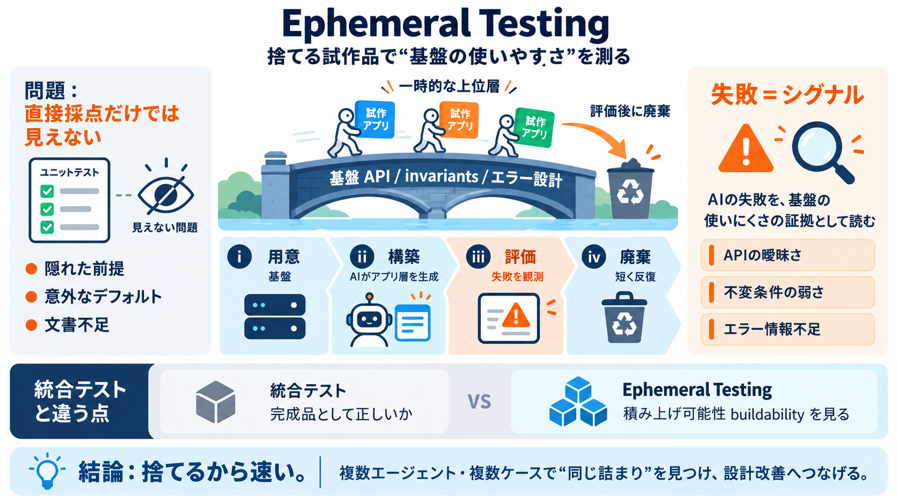

[PDF] Daniel Lemire, Ph.D.
External examiner/referee – Jury member for the University of Quebec prizes (2024); – External examiner for Ph.D. thesis…

捨てる試作品で測る
品質保証を「基盤そのもの」ではなく「基盤の上に一時的に組んだ上位層が動くか」で評価する考え方です。
キーワード：invariants / API / エラー設計 / AIエージェント
何を正しいとするか
単体テストは部品の正しさを直接検証しやすい一方で、「使って初めて分かるつらさ」は見逃しがちです。
橋は渡ってみる
基盤（橋）を“採点”するより、AIが組む上位層（渡る人の動き）で、どこで詰まるかを見る発想です。
手順は短く回す
まず基盤コードを用意し、別のAIエージェントにその基盤で上位層を素早く組ませてテストします。
捉え方が本質
上位層の失敗は「AIの能力不足」ではなく「基盤の使いにくさ」や「前提の欠落」の証拠として扱います。
成功しやすい条件
基盤が「綺麗なAPI」「安定した不変条件（invariants）」「有用なエラー」を備えるほど、AIの積み上げは成功しやすいです。
日本語用語：不変条件（ふへんじょうけん）＝状態が守られるべきルール
失敗が増える理由
隠れた状態、意外なデフォルト、ドキュメント不足があると、AIは試行錯誤してパッチの山や失敗を起こしやすくなります。
単なる統合ではない
統合テストに似ていますが決定的に違うのは、「上位層を評価後に捨てる」点です。
重要な問い：「完成品として正しい」より「積み上げが成立する」か（English: buildability／日本語：積み上げ可能性）
反復で精度を上げる
異なるAIエージェントや別タスクでも同じ基盤を評価して、失敗の再現性（＝基盤起因の可能性）を確かめます。
万能ではない
AIは得意な表現・設計パターンに寄りやすく、失敗が「基盤の問題」か「AI側の選択」かが混ざるリスクがあります。
判断のコツ：単発の失敗で結論を急がず、反復で“傾向”を見ます。
作り直せるだけでは足りない
「AIなら何度でも作り直せる」という反論はあるものの、実用には基盤側の安定性（stability）が必要だとされています。
テストと設計の橋
この手法は、テスト結果を「API設計・ドキュメント・エラー設計の改善」へつなげる役割を持ちます。
提案の位置づけ：従来テストを置き換えるより、補完して設計レビューを強くする。
要点の整理
評価可能性と実務性を軸に、リスクと手続き（反復）で頑健性を確保するのが鍵です。
結論
エフェメラル・テスティングは、AIが積み上げて失敗する箇所を基盤の設計改善に転換する品質保証の方法です。
References
• Daniel Lemire: “ephemeral testing” に関する言及（入力テキスト内の要約に基づく）
• 追加根拠：本入力には手法詳細の一次情報が含まれないため、ここでは概念説明のみをスライド化
External examiner/referee – Jury member for the University of Quebec prizes (2024); – External examiner for Ph.D. thesis…
These libraries are mature. They have been optimized for years, by me and by others. For a long time, their performance …
Azim Afroozeh at Vrije Universiteit Amsterdam (2026) – supervised by Peter Boncz. Lockman Saleh at UQAM (2025) - superv…
— Au CRSNG, membre du comit´ e d’´ evaluation du programme de subventions d’outils et d’instruments de recherche dans le…
Software: Practice and Experience 56 (8), 2026 Details — Converting an Integer to a Decimal String in Under Two Nanosec…